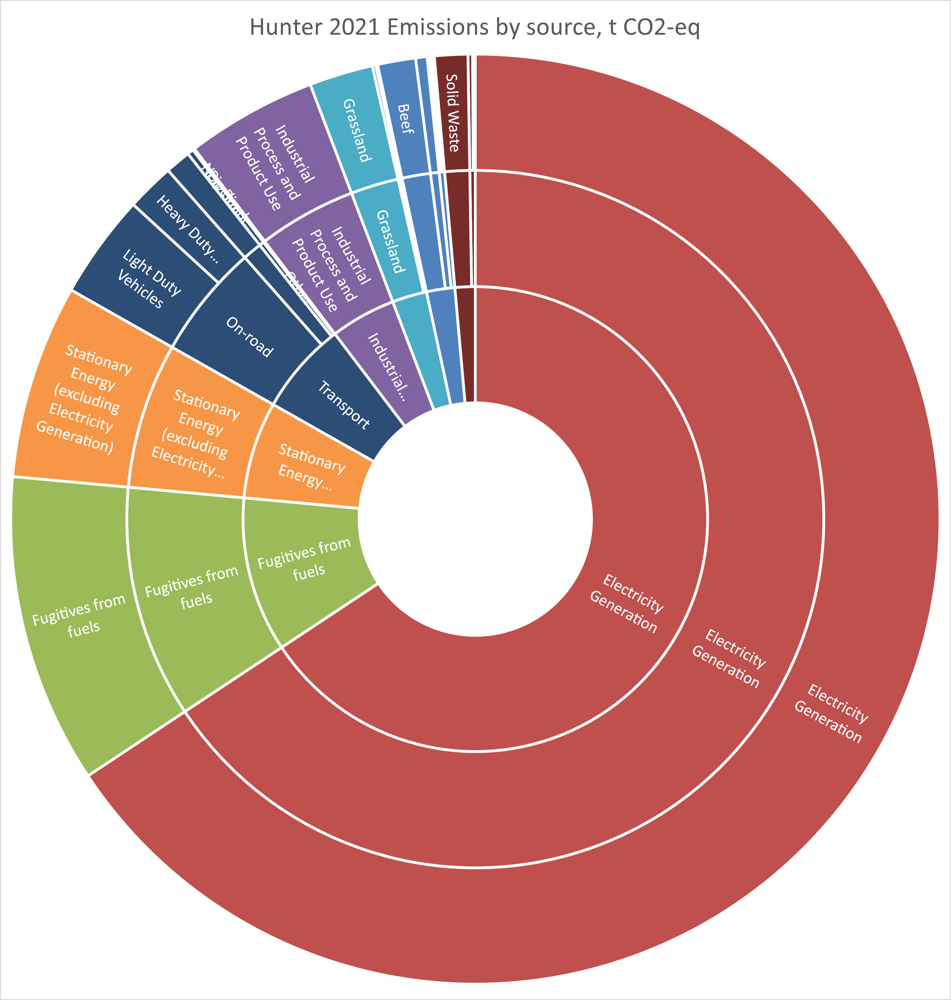
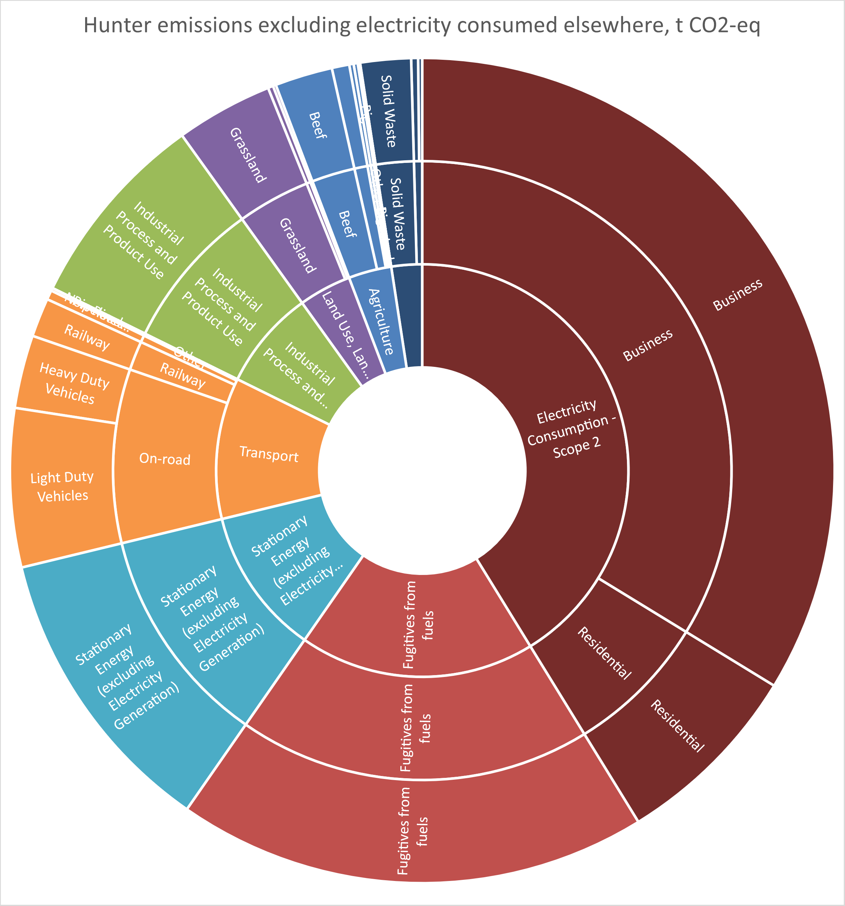
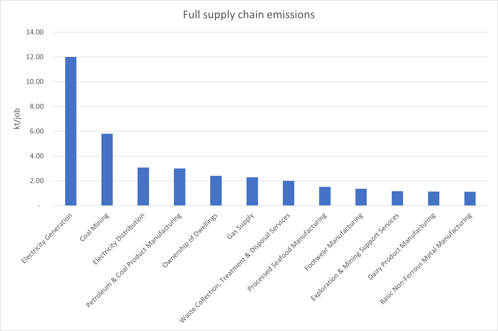

Emissions update
Supply side emissions
The Hunter region is one of the key regions in Australia and NSW regarding GHG emissions. In 2021, 48 Mt or 37% of NSW emissions were in the Hunter. This is despite having only 8% of the NSW population.Sixty-eight per-cent of emissions are due to electricity generation, however. Sixty-three percent of these emissions are due to consumption of electricity (so called scope 2 emissions) outside the region.Adjusting for these emissions, results in 27Mt of emissions in the Hunter, still 21% of the state’s emissions. On a per-capita basis, emissions in the hunter are 61t/capita using scope 1 accounting, and adjusting for exported electricity, 34t/capital. Against a backdrop of an average Australian of 19t/capita (National Greenhouse Gas Inventory Quarterly Update: March 2022 - DCCEEW).
Emission sources in the Hunter
Below is a breakdown of the greenhouse gas emissions occurring in the Hunter region courtesy of the (NSW Net Zero Emissions Dashboard).

Electricity generation is clearly the elephant in the room. Net zero is not going to be achieved without decarbonising electricity supply, but what if we exclude the electricity that is exported to Sydney and other regions? That will be the exclusion of the “Scope 1” emissions from electricity gneration. We can still include the impact we have as electricity consumers, but including what are known as “Scope 2 emissions”. These are emissions from electricity caused by the consumption of that electricity in the region. The elephant is a bit smaller, but we still clearly need to address emissions from electricity - either from a demand or a supply perspective.
Emission sources in the Hunter, excluding exported electricity

We are seeing action on emissions reductions however, especially as some of the ageing coal fired power stations in the region are retired or reduce their capacity utilisation. 2021 saw a reduction of some 7% of Hunter emissions, mostly due to electricity generation, but reductions in fugitive emissions from fuels also declined. The region needs to continue this trend year on year in order to have a chance of getting to net-zero by 2050.
Emissions from Hunter coal exports
Whilst emissions from electricity are the dominant source of emissions in the Hunter, these emission quantities are dwarfed by the global impact of exported coal from the Hunter.
In 2021, Newcastle exported 156,665,674 tonnes of coal (Port of Newcastle data). Assuming an energy content of 29GJ/t and an emission factor of 90kg CO2-eq/GJ (National Greenhouse gas factors) gives an estimated emission of 409 Mt CO2-eq, or 88% of Australia’s territorial emissions (based on Australia’s National Greenhouse Gas Inventory: March 2023).
The IEA predicts global coal demand to plateau out to 2020. A decline in demand for coal in most advanced economies is being offset by a tight energy supply market (partly due to the Ukraine situation) raising prices, particularly for gas (IEA Coal report).Scenarios to 2030 by the IEA in the World Energy Outlook estimate a peak and decline to 2020 levels by 2030 for global coal demand in the stated policies scenario, a decline of 10% in the Announced Pledges Scenario, and a fall by 55% in the Net Zero Scenario.
One of the arguments regarding Hunter coal is that the emissions intensity is better than global average coal, and thus it should be one of the latter producers to exit the market. Whilst global demand for coal still remains, it is likely that sufficient global supply will occur.
Demand-side approaches - the carbon footprint of the Hunter
If a demand-side view of emissions is taken, below is the breakdown of final demand categories. Clearly, exports are the dominant source - these emissions are the “embodied” emissions of exported goods, and are essentially the upstream (fuel and fugitive) emissions embodied in exports, principally coal. They do not include the emissions that will be released when the coal is combusted overseas.
Taking a “consumption” approach, we exclude those impacts embodied in exports, as they will be allocated to the final users of the coal. Doing so highlights the importance of households in demand-side mitigation options. The below figure categorises the Hunter carbon footprint by categories of final demand - these are the demand-side “drivers” of economic growth as classified in the national statistics, and include houshold consumption, government consumption, private and public investments (often in building stock, but also machinery and software that is used for productive purposes in future years), Government gross fixed captial expenditure and changes in inventories (e.g. when there is an increase in stockpiling of goods in a certain year.)
Households are responsible for almost 50%, whilst investments (mainly private) are significant (mainly construction of residential building stock)
Household demand
Below is the breakdown of Household footprint, firstly aggregated to 17 sectors, before breaking down to 114 sectors
Above are aggregated results, with disaggregated results at the level of Australian input-output tables below. The disaggregated results below only show the top 15 largest sectors of the footprint. The dominance of electricity is evident below, and aggregated in “utilities” above.
To further understand the drivers of the footprint, we can break down overall footprint values into quantities of consumption and intensity of production. The below figure shows the “emission multipliers” which show the full supply-chain emissions per million AUD.
Industrial demand
As well as the carbon footprint and potential mitigation options of households, the same thinking can be applied to industries - what are the main contributions in industrial supply-chains. The below figure calculates that metric and compares it to the level of employment in the sector - the more intensive industries have more emissions per job.
